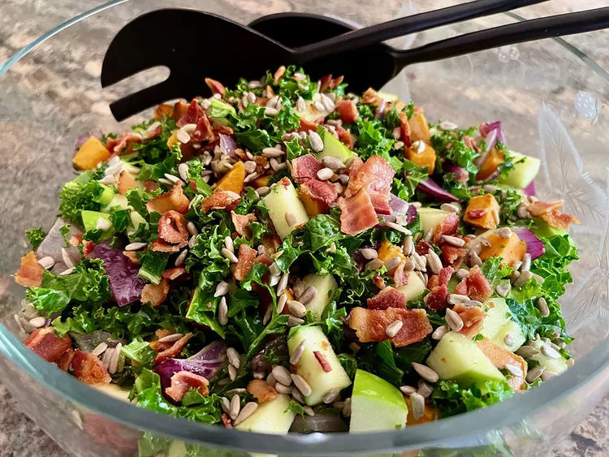

Kale Sweet Potato Salad

Description
On a diet, I have been interested in types of salad. This one looks good, so I want to share it with you guys. Enjoy!!
More information
Ingredients
- 1 sweet potato
- 1/2 red onion
- 2 tablespoons olive oil
- Salt and freshly ground black pepper to taste
- 4 strips bacon
- 1 bunch kale
- 1 Granny Smith apple - cored and diced
- 2 green onions, sliced
Salad Dresser
- 1/4 cup apple cider vinegar
- 1 teaspoon Dijon mustard
- 1 tablespoon honey, or to taste
- Salt and freshly ground black pepper to taste
- 1/2 cup raw, unsalted sunflower seeds (optional)
- 1/4 cup bacon grease or other oil